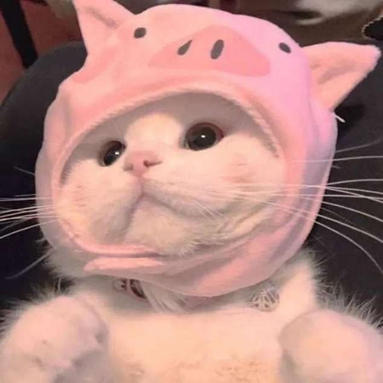
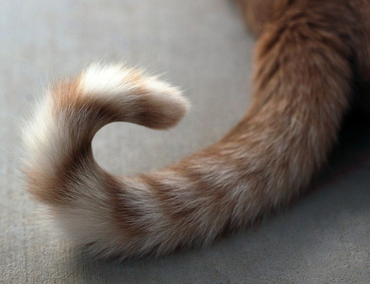
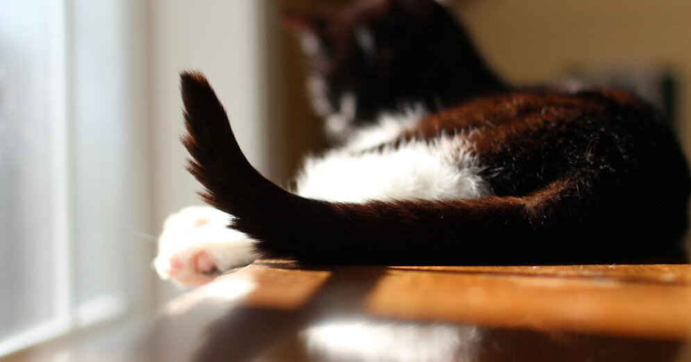
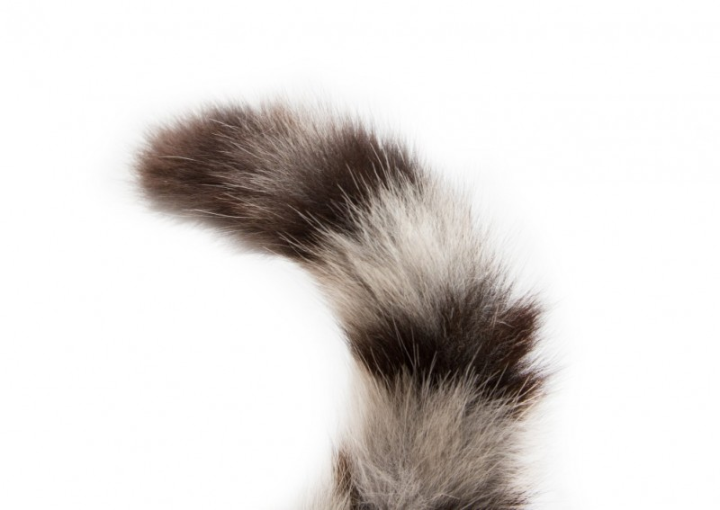
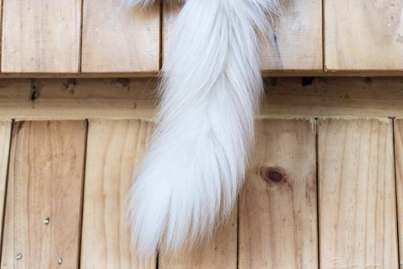

Почему китики самые лучшие?

Китики бывают разные, но все они прекрасные. Вот несколько причин почему:
Хвостики
Ушки
Носики
Лапки
Хвостики есть лысые и пушистые. Вот несколько фото хвостиков!
   